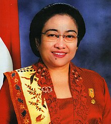

Latar Belakang
Gus Dur, atau Abdurrahman Wahid, lahir di Jombang pada 7 September 1940. Sebagai putra dari
keluarga pendiri Nahdlatul Ulama (NU), ia menimba ilmu agama dan menempuh pendidikan di Mesir
serta Irak. Gus Dur memimpin NU pada tahun 1984 dan memperjuangkan reformasi sosial dan
demokrasi, terutama melawan Orde Baru. Pada 1999, ia terpilih sebagai presiden ke-4 Indonesia,
meskipun masa jabatannya hanya berlangsung dua tahun. Setelah meninggal pada 2009, Gus Dur
dikenang sebagai tokoh yang berani dan berpikiran terbuka, serta pejuang pluralisme dan hak
asasi manusia di Indonesia.
Pelaksanaan
Saat menjabat sebagai presiden ke-4 Indonesia, Gus Dur menjalankan berbagai kebijakan yang
mencerminkan komitmennya terhadap demokrasi, pluralisme, dan reformasi, meskipun masa jabatannya
singkat (1999–2001).
1. Politik
Sebagai presiden, Gus Dur melakukan sejumlah reformasi politik yang penting. Ia mendorong
**otonomi daerah** untuk memperkuat peran pemerintah daerah dan meredam konflik separatisme.
Gus Dur juga **memisahkan Polri dari TNI** untuk mengurangi keterlibatan militer dalam
politik dan menghapuskan "Dwi Fungsi ABRI," yang sebelumnya memberi militer kekuasaan dalam
pemerintahan. Selain itu, ia **memperluas kebebasan pers** dan membuka ruang untuk
partai-partai politik, menciptakan iklim yang lebih demokratis. Meskipun kebijakan-kebijakan
ini menuai banyak pro-kontra, Gus Dur dikenang karena memperkuat demokrasi dan supremasi
sipil di Indonesia.
2. Ekonomi
Dalam bidang ekonomi, Gus Dur mencoba mengurangi ketergantungan pada IMF, memberantas
korupsi dengan membentuk BPPN, dan mendorong ekonomi kerakyatan melalui dukungan untuk UKM.
Ia juga membuka investasi asing untuk membantu pemulihan ekonomi. Meskipun penuh tantangan,
kebijakannya bertujuan memulihkan ekonomi dan memberdayakan masyarakat.
3. Sosial
Pelaksanaan pemikiran Gus Dur di bidang sosial berfokus pada pemberdayaan masyarakat,
keadilan sosial, dan penguatan hak-hak kaum minoritas. Ia percaya bahwa kesejahteraan rakyat
harus menjadi prioritas, dengan orientasi ekonomi yang memperjuangkan nasib rakyat kecil.
Gus Dur aktif turun ke lapangan, berinteraksi langsung dengan masyarakat, dan bekerja sama
dengan lembaga swadaya masyarakat untuk memberikan dukungan dan pengembangan kapasitas
kepada komunitas yang terpinggirkan. Ia juga menekankan pentingnya demokrasi yang inklusif,
di mana setiap individu memiliki hak untuk berpartisipasi tanpa memandang latar belakang
suku, agama, atau ras. Dengan pendekatan ini, Gus Dur mengadvokasi keadilan sosial dan
membangun masyarakat yang harmonis melalui dialog antaragama dan pengembangan ekonomi
kerakyatan, menjadikannya sebagai tokoh penting dalam memperjuangkan hak-hak sosial di
Indonesia.
4. Budaya
Pemikiran Gus Dur di bidang budaya menekankan pentingnya pribumisasi Islam, yaitu
mengintegrasikan nilai-nilai Islam dengan tradisi lokal Indonesia untuk menciptakan
identitas keislaman yang unik. Ia melihat kebudayaan sebagai lingkaran besar yang mencakup
semua aspek kehidupan, yang harus menjadi landasan bagi aktivitas sosial dan politik. Gus
Dur juga menghargai religiusitas komunal melalui tradisi keagamaan lokal yang mendukung
kohesi sosial dan demokrasi, serta menekankan keseimbangan antara tradisionalitas dan
modernitas. Selain itu, ia mengembalikan nilai-nilai spiritual sebagai bagian integral dari
kebudayaan Nusantara. Dengan pendekatan ini, Gus Dur berkontribusi pada pelestarian budaya
Indonesia dan penguatan identitas keislaman yang inklusif.
5. Pendidikan
Pelaksanaan pemikiran Gus Dur di bidang pendidikan melibatkan integrasi nilai-nilai Islam
dengan tradisi lokal untuk menciptakan pendidikan yang bermoral dan relevan. Gus Dur
berkeyakinan bahwa lembaga pendidikan harus membangun dasar-dasar kearifan lokal, yaitu
nilai-nilai yang terkandung dalam tradisi dan ajaran agama Islam, untuk membentuk manusia
yang ideal. Ia menekankan perlunya kurikulum yang tepat, dengan fokus pada aspek afektif dan
psikomotorik, serta pengembangan pola belajar yang student-oriented untuk membentuk karakter
kemandirian, tanggung jawab, kreatif, dan inovatif. Gus Dur juga mengadvokasi sinergi antara
elitisme dan populisme dalam pendidikan, memastikan bahwa pendidikan nasional menjadi lebih
baik dengan mengedepankan moralitas dan profesionalisme. Melalui pendekatan ini, Gus Dur
berkomitmen untuk membangun pendidikan yang membebaskan manusia dari belenggu-belenggu
tradisionalis dan mempromosikan toleransi dan berbagai budaya, etnis, ras, dan agama
6. Pertahanan & Keamanan
Pada masa pemerintahan Gus Dur (1999–2001), kebijakan pertahanan dan keamanan berfokus
pada reformasi institusi dengan memisahkan Polri dari TNI untuk memperkuat supremasi
sipil dan mengurangi dominasi militer dalam politik. Ia mengupayakan dialog damai untuk
menyelesaikan konflik di Aceh dan Papua serta mencoba meredakan ketegangan sektarian di
Maluku, meskipun hasilnya tidak sepenuhnya berhasil. Gus Dur juga memperkuat diplomasi
keamanan kawasan melalui kerja sama internasional. Namun, kebijakan ini menghadapi
tantangan besar, termasuk resistensi militer dan tekanan politik dari dalam negeri.
Kekurangan & Kelebihan
Pemerintahan Gus Dur membawa angin segar reformasi dan demokrasi, tetapi terganjal oleh
ketidakstabilan politik dan tantangan implementasi kebijakan. Keberhasilannya dalam membangun
fondasi kebebasan tetap diakui, meski pendekatan kontroversial dan konflik sosial menjadi
tantangan besar pada masa pemerintahannya.
Kekurangan
1. Ketidakstabilan Politik:
Sering terlibat konflik dengan DPR dan partai-partai politik, sehingga pemerintahan terkesan
tidak stabil.
2. Kebijakan yang Kontroversial:
Wacana referendum di Aceh dan kebijakan simbolik di Papua dianggap memicu resistensi dari
berbagai kalangan, termasuk militer.
3. Kelemahan Eksekusi Kebijakan:
Banyak kebijakan yang dinilai tidak terencana dengan baik, sehingga implementasinya lemah
atau
tidak mencapai hasil yang diharapkan.
4. Konflik Internal dan Sosial:
Gagal meredam konflik sektarian di Maluku dan Poso, yang mengakibatkan jatuhnya korban
jiwa
dan kerusakan besar.
5. Kritik terhadap Gaya Kepemimpinan:
Keputusan-keputusan yang dianggap spontan dan kurang berkonsultasi dengan pihak lain
sering
kali memicu kontroversi dan resistensi dari kalangan elite politik.
Kelebihan
1. Reformasi Demokrasi:
- Pemisahan Polri dari TNI, memperkuat supremasi sipil atas militer.
- Mendorong kebebasan pers dan hak asasi manusia, menciptakan ruang lebih besar untuk kritik
terhadap pemerintah.
2. Peningkatan Otonomi Daerah:
- Menginisiasi desentralisasi kekuasaan melalui pelaksanaan Otonomi Daerah, memberi
pemerintah
daerah kewenangan lebih besar dalam mengelola wilayahnya.
3. Pendekatan Dialogis untuk Konflik:
- Mengupayakan dialog damai di Aceh dan Papua, termasuk mengizinkan simbol budaya seperti
nama
"Papua" dan bendera Bintang Kejora.
4. Diplomasi Aktif:
- Memperbaiki hubungan internasional, khususnya dengan negara-negara Barat dan Timur Tengah,
setelah masa isolasi di era Orde Baru.
5. Kebebasan Beragama dan Keberagaman:
- Mendukung pluralisme dan perlindungan minoritas, termasuk memperjuangkan toleransi
beragama.
Wakil Presiden

Wakil Presiden Gus Dur adalah Megawati Soekarnoputri.
Ia menjadi Wakil Presiden Indonesia setelah terpilih melalui Sidang Umum MPR pada tahun
1999. Hubungan Gus Dur dan Megawati sempat tegang karena perbedaan gaya kepemimpinan dan
pendekatan dalam menjalankan pemerintahan. Ketegangan politik ini memengaruhi stabilitas
pemerintahan, hingga akhirnya Megawati menggantikan Gus Dur sebagai Presiden pada Juli 2001
setelah Gus Dur dilengserkan melalui Sidang Istimewa MPR.